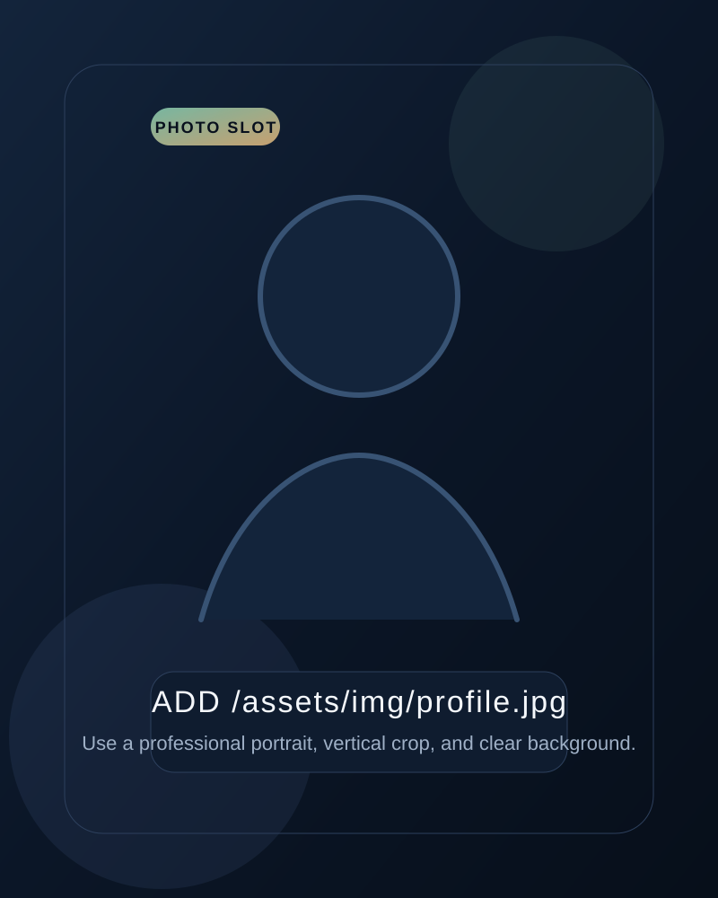

Full-stack web delivery with product sense, accessibility, and technical follow-through
Maciej Stencel
Full-Stack Developer
I build web products end to end: clear frontend experiences, reliable backend logic, and deployment-ready setups that stay maintainable after launch.
Open to full-stack, web platform, and product-focused opportunities

Professional snapshot
About
A full-stack developer who cares how products behave after launch
Strong web work is more than shipping screens. It needs structure, accessibility, backend clarity, and enough technical discipline to stay reliable in production.
Skills
Tools and habits that help me move work from concept to production
My strongest work sits where frontend quality, web delivery, and careful technical follow-through meet.
Workflow
How I build from idea to stable delivery
I work like a product engineer: discovery first, clear scope, then quality-focused implementation with real-world constraints in mind.
Experience
Hands-on work across accessibility, platforms, and product-style delivery
The titles matter less than the scope: shipping interfaces, maintaining systems, and improving live web environments.
Projects
Selected work that shows how I build, refine, and verify results
Each project reflects practical execution, product thinking, and care for what the final experience feels like.
Education
Computer science background supported by practical project work
Formal study gave me a strong base. Most of the growth since then has come from building, refining, and shipping.
Certificates & Growth
A workflow that values speed, but not at the expense of judgment
I keep my toolkit current, but I treat quality, review, and accountability as non-negotiable.
Contact
Let's talk about a role, a product, or a practical collaboration
The contact section stays direct and useful: email, phone, GitHub, LinkedIn, and location in one place.